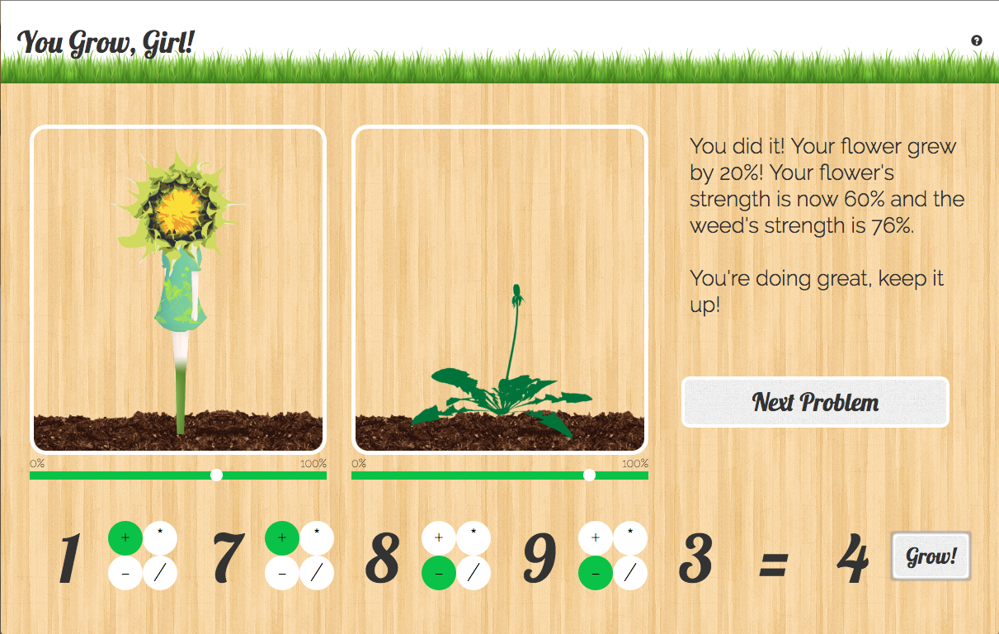
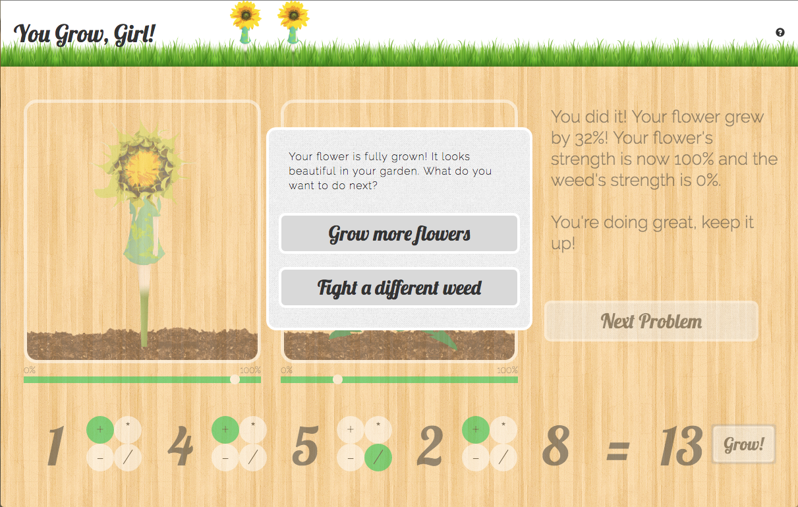
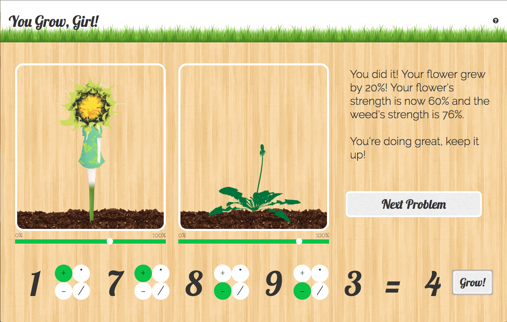
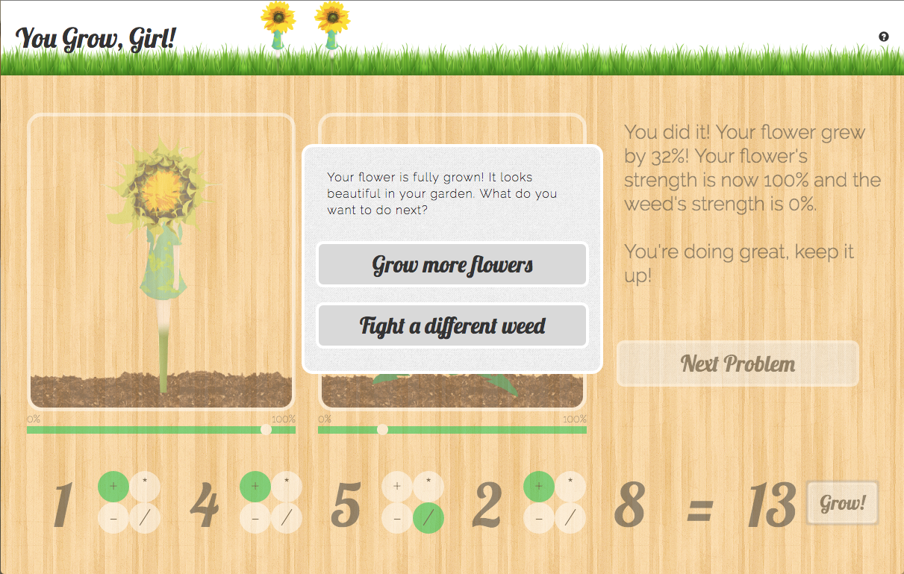
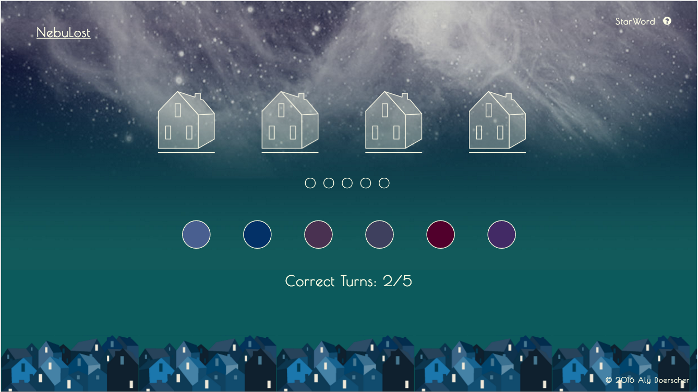
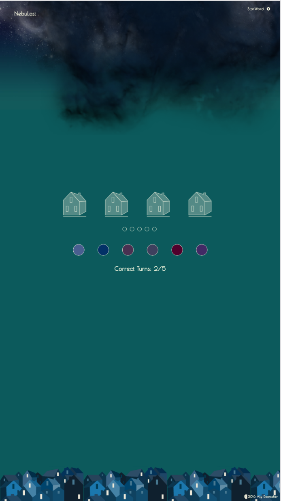
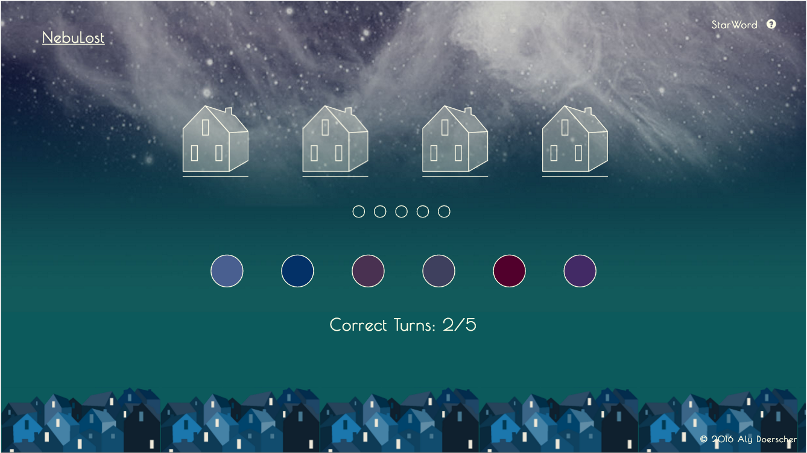
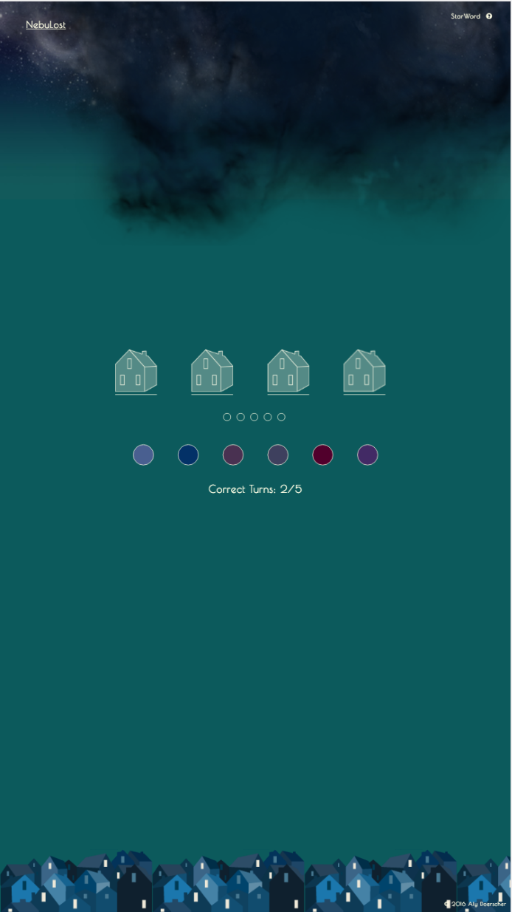

Poster
“poured from, pinned to” was a three-person show that explored themes of domesticity, uitlity, and the body through sculpture and installation based work. The show was a part of a rotating series put on by undergraduate thesis students in RISD’s Sculpture Department. This series of posters sought to transform the familiar into the uncanny by divorcing the objects from their normal context. The title “poured from, pinned to” reflects the process and verbs used to created many of the works, which included mutated tableware, cast wax socks, leaning rubber forms, and milk frozen in the shape of tub spouts
Description
“poured from, pinned to” was a three-person show that explored themes of domesticity, uitlity, and the body through sculpture and installation based work. The show was a part of a rotating series put on by undergraduate thesis students in RISD’s Sculpture Department. This series of posters sought to transform the familiar into the uncanny by divorcing the objects from their normal context. The title “poured from, pinned to” reflects the process and verbs used to created many of the works, which included mutated tableware, cast wax socks, leaning rubber forms, and milk frozen in the shape of tub spouts


 



 


